Required confidence interval width | ||||||||||
|---|---|---|---|---|---|---|---|---|---|---|
Prevalence | 1% | 1.5% | 2% | 2.5% | 3% | 3.5% | 4% | 5% | 10% | 15% |
5% or 95% | 1,825 | 812 | 457 | 292 | 203 | 149 | 115 | |||
10% or 90% | 3,458 | 1,537 | 865 | 554 | 385 | 283 | 217 | 139 | ||
15% or 85% | 4,899 | 2,177 | 1,225 | 784 | 545 | 400 | 307 | 196 | 49 | |
20% or 80% | 6,147 | 2,732 | 1,537 | 984 | 683 | 502 | 385 | 246 | 62 | 28 |
25% or 75% | 7,203 | 3,202 | 1,801 | 1,153 | 801 | 588 | 451 | 289 | 73 | 33 |
Learning objectives
By the end of this module you will be able to:
- Explain the issues involved in sample size estimation for epidemiological studies;
- Estimate sample sizes for descriptive and analytic studies;
- Compute the sample size needed for planned statistical tests;
- Adjust sample size calculations for factors that influence study power.
Optional readings
Kirkwood and Sterne (2001); Chapter 35. [UNSW Library Link]
Bland (2015); Chapter 18. [UNSW Library Link]
For interest: Woodward (2013); Chapter 8. [UNSW Library Link]
10.1 Introduction
Determining the appropriate sample size (the number of participants in a study) is one of the most critical issues when designing a research study. A common question when planning a project is “How many participants do I need?” The sample size needs to be large enough to ensure that the results can be generalised to the population and will be accurate, but small enough for the study question to be answered with the resources available. In general, the larger the sample size, the more precise the study results will be.
Unfortunately, estimating the sample size required for a study is not straightforward and the method used varies with the study design and the type of statistical test that will be conducted on the data collected. In the past, researchers calculated the sample size by hand using complicated mathematical formula. More recently, look-up tables have been created which has removed the need for hand calculations. Now, most researchers use computer programs where parameters relevant to the particular study design are entered and the sample size is automatically calculated. In this module, we will use an abbreviated look-up table to demonstrate the parameters that need to be considered when estimating sample sizes for a confidence interval and use software for all other sample size calculations. The look-up table allows you to see at a glance, the impact of different factors on the sample size estimation.
Under and over-sized studies
In health research, there are different implications for interpreting the results if the sample size is too small or too large.
An under-sized study is one which lacks the power to find an effect or association when, in truth, one exists. If the sample size is too small, an important difference between groups may not be statistically significant and so will not be detected by the study. In fact, it is considered unethical to conduct a health study which is poorly designed so that it is not possible to detect an effect or association if it exists. Often, Ethics Committees request evidence of sample size calculations before a study is approved.
A classic paper by Freiman et al examined 71 randomised controlled trials which reported an absence of clinical effect between two treatments.(Freiman et al. 1978) Many of the trials were too small to show that a clinically important difference was statistically significant. If the sample size of an analytic study is too small, then only very limited conclusions can be drawn about the results.
In general, the larger the sample size the more precise the estimates will be. However, large sample sizes have their own effect on the interpretation of the results. An over-sized study is one in which a small difference between groups, which is not important in clinical or public health terms, is statistically significant. When the study sample is large, the null hypothesis could be rejected in error and research resources may be wasted. This type of study may be unethical due to the unnecessary enrolment of a large number of people.
10.2 Sample size estimation for descriptive studies
To estimate the sample size required for a descriptive study, we usually focus on specifying the width of the confidence interval around our primary estimate. For example, to estimate the sample size for a study designed to measure a prevalence we need to:
- nominate the expected prevalence based on other available evidence;
- nominate the required level of precision around the estimate. For this, the width of the 95% confidence interval (i.e. the distance equal to 1.96 \(\times\) SE) is used.
Table 10.1 is an abbreviated look-up table that we can use to estimate the sample size for this type of study. Note that the sample size required to detect an expected population prevalence of 5% is the same as to detect a prevalence of 95%. Similarly 10% is equivalent to 90% etc. It is symmetric about 50%. From Table 10.1, you can see that the sample size required increases as the expected prevalence approaches 50% and as the precision increases (i.e. the required 95% CI becomes narrower).
Worked Example 10.1
A descriptive cross-sectional study is designed to measure the prevalence of bronchitis in children age 0-2 years with a 95% CI of \(\pm\) 4%. The prevalence is expected to be 20%. From the table, a sample size of at least 385 will be required for the width of the 95% CI to be \(\pm\) 4% (i.e. the reported precision of the summary statistic will be 20% (95% CI 16% to 24%)).
If the prevalence turns out to be higher than the researchers expected or if they decided that they wanted a narrower 95% CI (i.e. increase precision), a larger sample size would be required.
- What sample size would be required if the prevalence was 15% and the desired 95% CI was \(\pm\) 3%?
- Answer: 545
10.3 Sample size estimation for analytic studies
Analytic study designs are used to compare characteristics between different groups in the population. The main study designs are analytic cross-sectional studies, case-control studies, cohort studies and randomised controlled trials. For analytic study designs, the outcome measure of interest can be a mean value, a proportion or a relative risk if a random sample has been enrolled. For case-control studies the most appropriate measure of association is an odds ratio.
Factors to be considered
The first important decision in estimating a required sample size for an analytic study is to select the type of statistical test that will be used to report or analyse the data. Each type of test is associated with a different method of sample size estimation.
Once the statistical method has been determined, the following issues need to be decided:
- Statistical power: the chance of finding a difference if one exists, e.g. 80%;
- Level of significance: the P value that will be considered significant, e.g. P<0.05;
- Minimum effect size of interest: the size of the difference between groups e.g. the difference in the proportion of parents who oppose immunisation in two different regions or the difference in mean values of blood pressure in two groups of people with different types of cardiac disease;
- Variability: the spread of the measurements, e.g. the expected standard deviation of the main outcome variable (if continuous), or the expected proportions;
- Resources: an estimate of the number of participants available and amount of funding to run the study.
In addition to deciding the level of power and probability that will be used, the difference between groups that is regarded as being important has to be estimated. The smallest difference between study groups that we want to detect is described as the minimum expected effect size. This is determined on the basis of clinical judgement, public health importance and expertise in the condition being researched, or may it be need to be determined from a pilot study or a literature review. The smaller the expected effect or association, the larger the sample size will need to obtain statistical significance. We also need some knowledge of how variable the measurement is expected to be. For this we often use the standard deviation for a continuous measure. As measurement variability increases, the sample size will need to increase in order to detect the expected difference between the groups. Above all, a study has to be practical in terms of the availability of a population from which to draw sufficient numbers for the study and in terms of the funds that are available to conduct the study.
Power and significance level
The power of a study, which was discussed in Module 4, is the chance of finding a statistically significant difference when one exists, i.e. the probability of correctly rejecting the null hypothesis. The relationship between the power of a study and statistical significance is shown in Table 10.2.
| Effect | No effect |
|---|---|---|
Evidence | Correct | ɑ |
No evidence | β | Correct |
The power of a study is expressed as 1 - β where β is the probability of a false negative (that is, the probability of a Type II error - incorrectly not rejecting the null hypothesis. In most research, power is generally set to 80% (a Type II error rate of 20%). However, in some studies, especially in some clinical trials where rigorous results are required, power is set to 90% (a Type II error rate of 10%).
The significance level, or α level, is the level at which the P value of a test is considered to be statistically significant. The α level is usually set at 5% indicating a probability of <0.05 will be regarded as statistically significant. Occasionally, especially if several outcome measures are being compared, the α level is set at 1% indicating a probability of <0.01 will be regarded as statistically significant.
The calculation of sample sizes for analytic studies are based on calculations that are somewhat tedious to compute by hand. Software packages or online sample size calculators are the standard method of calculating sample sizes for analytic studies. In this module, we will demonstrate the use of an online calculator called PS, available at https://cqsclinical.app.vumc.org/ps/
10.4 Detecting the difference between two means
The test that is used to show that two mean values are significantly different from one another is the independent samples t-test (Module 5). The sample size needed for this test to have sufficient power can be calculated using PS as shown in the Worked Example below.
Worked Example 10.2
There is a hypothesis that the use of the oral contraceptive (OC) pill in premenopausal women can increase systolic blood pressure. A study was planned to test this hypothesis using a two sided t-test. The investigators are interested in detecting an increase of at least 5 mm Hg systolic blood pressure in the women using OC compared to the non-OC users with 90% power at a 5% significance level. A pilot study shows that the SD of systolic blood pressure in the target group is 25 mm Hg and the mean systolic blood pressure of non-OC user women is 110 mm Hg. What is the minimum number of women in each group that need to be recruited for the study to detect this difference?
Solution The effect size of interest is 5 mm Hg and the associated standard deviation is 25 mm Hg. For power of 90% and alpha of 5%, the sample size calculation using the t-test > Independent tab of PS:
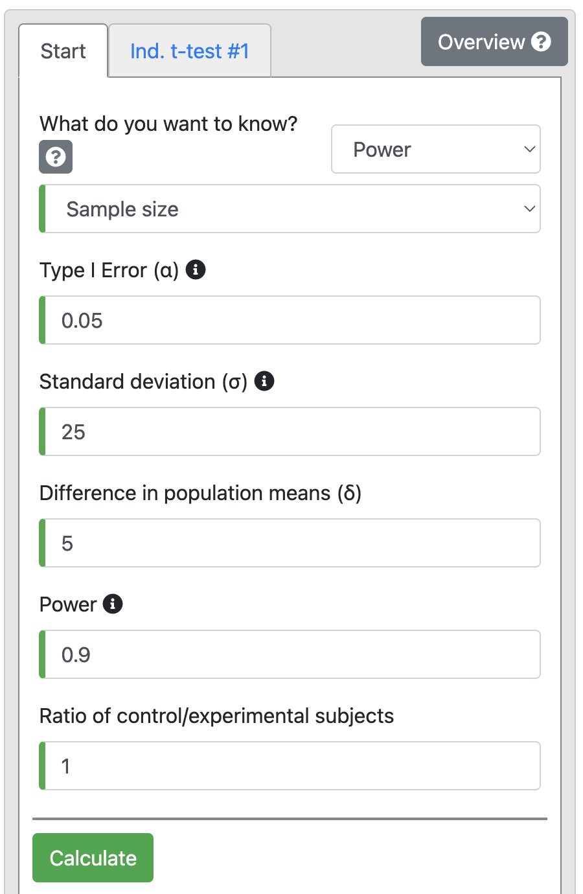
Output 10.2
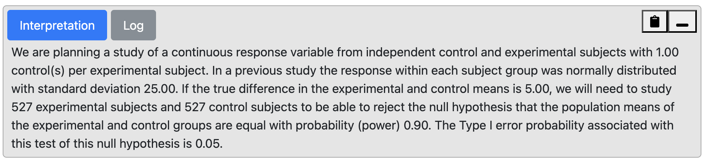
From the output, we can see that with 90% power we will need 527 participants in each group, i.e., 1054 participants in total.
If the above were carried out by taking baseline measures of systolic blood pressure, and then again when the women were taking the OC pills, it would be a matched-pair study. Computing sample sizes for paired studies requires an estimate of the correlation between the paired observations, or an estimate of the standard deviation of the differences. Calculating sample sizes for paired studies is a little more complex than for independent studies, and is outside the scope of this course.
10.5 Detecting the difference between two proportions
The statistical test for deciding if there is a significant difference between two independent proportions is a Pearson’s chi-squared test (Module 7).
Other than the power and alpha required for the test, the expected prevalence or incidence rate of the outcome factor needs to be estimated for each of the two groups being compared, based on what is known from other studies or what is expected. Occasionally, we may not know the expected proportion in one of the groups, e.g. in a randomised control trial of a novel intervention. In the sample size calculation for such a study, we should instead justify the minimum expected difference between the proportions based on what is important from a clinical or public health perspective. Based on the minimum difference, we can then derive the expected proportion for both groups. Note that the smaller the difference, the larger the sample size required.
The sample size required in each group to observe a difference in two independent proportions can be calculated using the Dichotomous tab of PS.
Worked Example 10.3
A health promotion campaign is being developed to reduce smoking in a community, and will be tested in a randomised controlled trial. The researchers would like to detect a reduction in smoking from 35% to 25%. How many participants should be recruited to detect a difference at a 5% significance level, with a power of 90%?
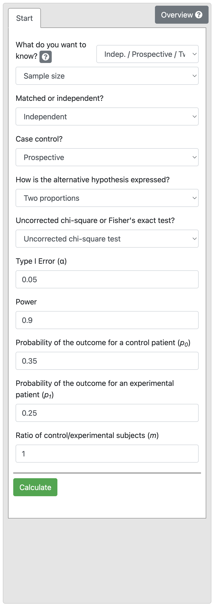
Output 10.3: Sample size calculation for two independent proportions
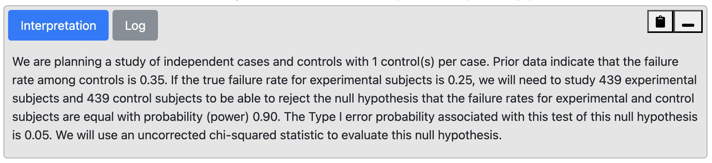
From Output 10.3, we see that we would need 439 intervention and 439 control participants (i.e. a total sample size of 878 participants).
10.6 Detecting an association using a relative risk
The relative risk is used to describe the association between an exposure and an outcome variable if the sample has been randomly selected from the population. This statistic is often used to describe the effect or association of an exposure in a cross-sectional or cohort study or the effect/association of a treatment in an randomised controlled trial. To estimate the sample size required for the RR to have a statistically significant P value, i.e. to show a significant association, we need to define: - the size of the RR that is considered to be of clinical or public health importance; - the event rate (rate of outcome) among the group who are not exposed to the factor of interest (reference group); - the desired level of significance (usually 0.05); - the desired power of the study (usually 80% or 90%).
In general, a RR of 2.0 or greater is considered to be of public health importance, however, a smaller RR can be important when exposure is high. For example, there may be a relatively small risk of respiratory infection among young children with a parent who smokes (RR ~ 1.2). If 25% of children are exposed to smoking in their home, then the high exposure rate leads to a very large number of children who have preventable respiratory infections across the community.
Worked Example 10.4
A study is planned to investigate the effect of an environmental exposure on the incidence of a certain common disease. In the general (unexposed) population the incidence rate of the disease is 50% and it is assumed that the incidence rate would be 75% in the exposed population. Thus the relative risk of interest would be 1.5 (i.e. 0.75 / 0.50). We want to detect this effect with 90% power at a 5% level of significance.
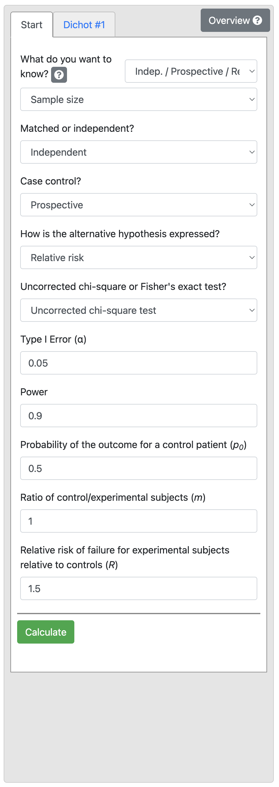
Output 10.4: Sample size calculation for relative risk
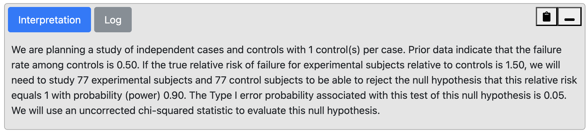
From Output 10.4, we can see that for a control proportion of 0.5 and RR of 1.5, we need a total sample size of 154, that is 77 people would be needed in each of the exposure groups.
10.7 Detecting an association using an odds ratio
If we are designing a case-control study, the appropriate measure of effect is an odds ratio. The method for estimating the sample size required to detect an odds ratio of interest is slightly different to that for the relative risk. However, the same parameters are required for the estimation:
- the minimum OR to be considered clinically important;
- the proportion of exposed among the control group;
- the desired level of significance (usually 0.05);
- the desired power of the study (usually 80% or 90%).
Worked Example 10.5
A case-control study is designed to examine an association between an exposure and outcome factor. Existing literature shows that 30% of the controls are expected to be exposed. We want to detect a minimum OR of 2.0 with 90% power and 5% level of significance.
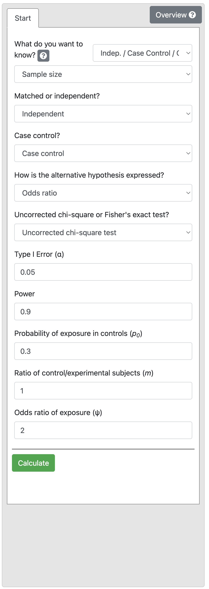
Output 10.5
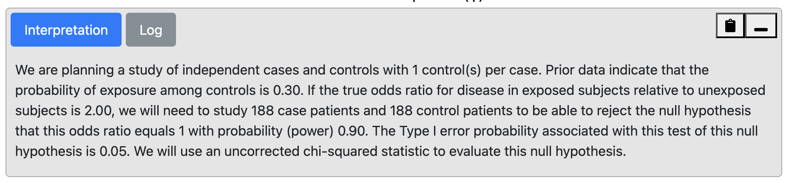
We find that 188 controls and 188 cases are required i.e. a total of 376 participants.
This sample size would be smaller if we increased the effect size (OR) or reduced the study power to 80%. You could try this yourself (answer: 141 per group if power is reduced to 80%).
10.8 Factors that influence power
Dropouts
It is common to increase estimated sample sizes to allow for drop-outs or non-response. To account for drop-outs, the estimated sample size can be divided by (1 minus the dropout rate). Consider the following case:
- n-completed: the number who will complete the study (i.e. n after drop-out)
- n-recruited: the number who should be recruited (i.e. n before drop-out)
- d: drop-out rate (as a proportion - i.e. a number between 0 and 1)
Then n-completed = n-recruited × (1 - d)
Re-arranging this formula gives: n-recruited = n-completed ÷ (1 - d).
Unequal groups
Many factors that come into play in a study can reduce the estimated power of a study. In clinical trials, it is not unusual for recruitment goals to be much harder to achieve than expected and therefore for the target sample size to be impossible to realise within the timeframe planned for recruitment.
In case-control studies, the number of potential case participants available may be limited but study power can be maintained by enrolling a greater number of controls than cases. Or in an experimental study, more participants may be randomised to the new treatment group to test its effects accurately when much is known about the effect of standard care and a more precise estimate of the new treatment effect is required.
However, there is a trade-off between increasing the ratio of group size and the total number that needs to be enrolled. Consider Worked Example 10.5: selecting an equal number of controls and cases would require 188 cases and 188 controls, a total of 376 participants.
We may want to reduce the number of cases required, by selecting 2 controls for every case. Selecting 2 controls (N1) per case (N2) would require 140 cases and 280 controls, a total of 420 participants. We can extend this example and investigate the impact of changing the ratio of controls per case.
Controls per case | Number of cases required | Number of controls required | Total participants required |
|---|---|---|---|
1 | 188 | 188 | 376 |
2 | 140 | 280 | 420 |
3 | 124 | 372 | 496 |
4 | 115 | 460 | 575 |
5 | 111 | 555 | 666 |
6 | 107 | 642 | 749 |
7 | 105 | 735 | 840 |
8 | 103 | 824 | 927 |
9 | 102 | 918 | 1,020 |
10 | 101 | 1,010 | 1,111 |
This can be visualised graphically, as in Figure 10.1.
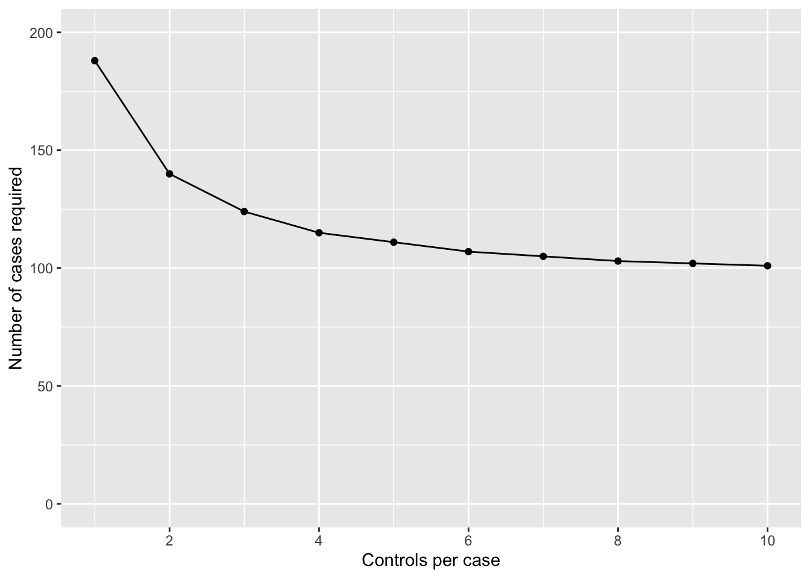
We can see that the number of cases required drops off if we go from 1 to 2 controls per case, and again from 2 to 3 controls per case. Once we go from 3 to 4 controls per case, we only reduce the number of cases by 9 (124 vs 115 cases), but at an increase of 88 (372 vs 460) controls. Clearly, this reduction in cases is not offset by the extra controls required.
10.9 Limitations in sample size estimations
In this module we have seen how to use a sample size calculator to estimate the sample size requirement of a study given the statistical test that will be used and the expected characteristics of the sample. However, once a study is running, it is not unusual for sample size to be compromised by the lack of research resources, difficulties in recruiting participants or, in a clinical trial, participants wanting to change groups when information about the new experimental treatment rapidly becomes available in the press or on the internet.
One approach that is increasingly being used is to conduct a blinded interim analysis say when 50% of the total data that are planned have been collected. In this, a statistician external to the research team who is blinded to the interpretation of the group code is asked to measure the effect size in the data with the sole aim of validating the sample size requirement. It is rarely a good idea to use an interim analysis to reduce the planned sample size and terminate a trial early because the larger the sample size, the greater the precision with which the treatment effect is estimated. However, interim analyses are useful for deciding whether the sample size needs to be increased in order to answer the study question and avoid a Type II error.
10.10 Summary
In this module we have discussed the importance of conducting a clinical or epidemiological study with enough participants so that an effect or association can be identified if it exists (i.e. study power), and how this has to be balanced by the need to not enrol more participants than necessary because of resource issues. We have looked at the parameters that need to be considered when estimating the sample size for different studies and have used a look-up table to estimate required sample size for a prevalence study and a sample size calculator to estimate appropriate sample sizes in epidemiological research under the most straightforward situations. The common requirement in all the situations is that the researchers need to specify the minimum effect measure (e.g. difference in means, OR, RR etc) they want to detect with a given probability (usually 80% to 90%) at a certain level of significance (usually P<0.05). The ultimate decision on the sample size depends on a compromise among different objectives such as power, minimum effect size, and available resources. To make the final decision, it is helpful to do some trial calculations using revised power and the minimum detectable effect measure.
Software notes
In this module, we will demonstrate the use of an online calculator called PS, available at https://cqsclinical.app.vumc.org/ps/ While sample size calculations can be conducted in R (using the EpiR and pwr packages in particular), there is currently an inconsitency in EpiR which means that I do not recommend this package.
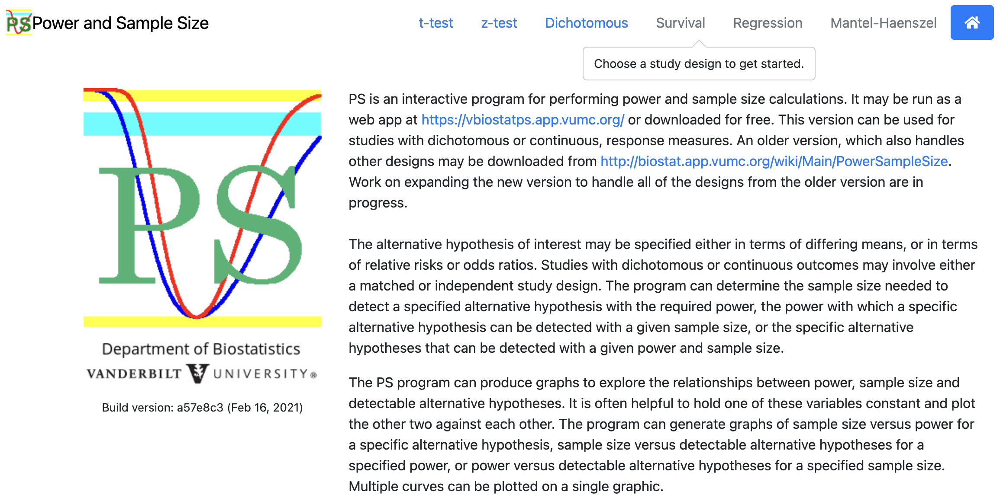
The web-app allows for a variety of variable types; we will focus on t-test and Dichotomous analyses.
10.11 Sample size calculation for two independent samples t-test
To do the problem discussed in Worked Example 10.2, choose t-test > Independent. Choose Power in the first drop-down, and then choose Sample size:
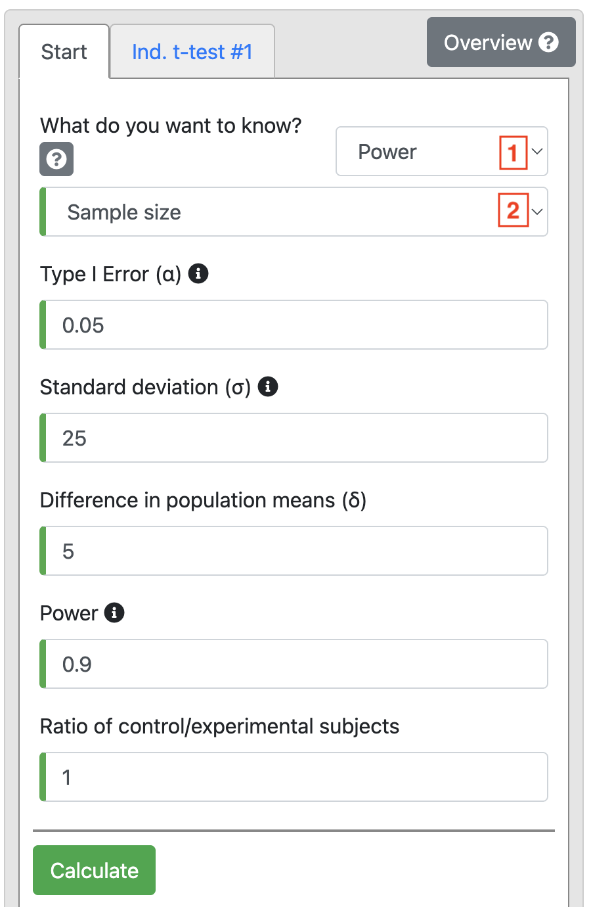
Based on the information in Worked Example 10.2, change Power to 0.9 and enter 25 as the Standard deviation (σ). We are interested in detecting a difference of 5 mmHg, so this is entered as Diference in population means (δ). We use equal numbers in each group, so Ratio is entered as 1.
Click Calculate to produce Output 10.2.
10.12 Sample size calculation for difference between two independent proportions
All sample size calculations for analyses based on 2-by-2 tables are conducted under the Dichotomous tab, choosing:
- Indep / Prospective / Two Prop. for analyses based on estimating the difference in proportions;
- Indep / Prospective / Rel. Risk for analyses based on estimating a relative risk;
- Indep / Case Control / Odds Ratio for case-control studies.
To do the problem discussed in Worked Example 10.3, choose Indep / Prospective / Two Prop. and Sample size in the first two drop-down options.
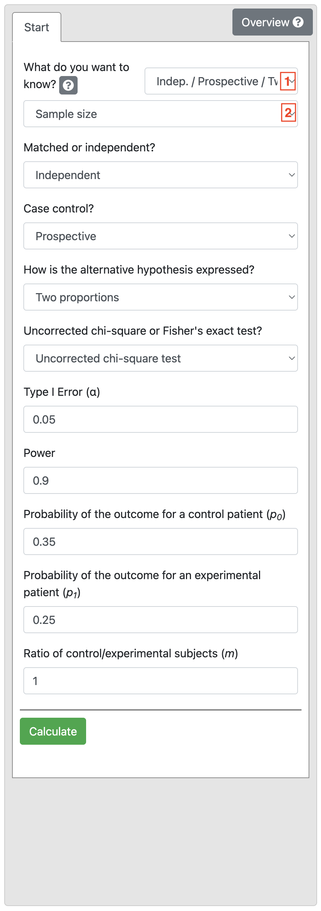
Based on the information in Worked Example 10.5, the Power is 0.9 and Significance level is 0.05, and the two proportions are entered as 0.35 and 0.2. Define equal numbers in each group (Ratio of 1).
Click Calculate obtain Output 10.3.
Note: It doesn’t matter if you swap the proportions for the Control and Experimental group, you will get the same result.
10.13 Sample size calculation with a relative risk or odds ratio
Using information from Worked Example 10.4, we select Indep / Prospective / Rel. Risk, and enter Power as 0.9, enter 0.5 as the Probability of the outcome for a control patient (p0). Finally, enter 1.5 as the Relative risk of failure for experimental subjects relative to controls (R) shown below:
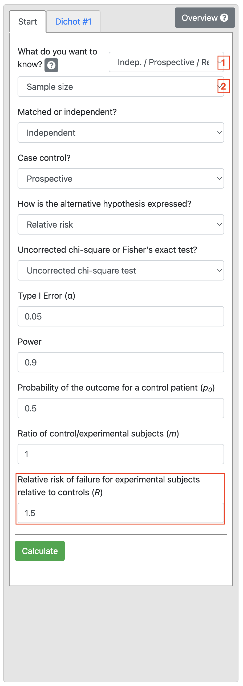
Now we calculate the sample size for Worked Example 10.5. Select Indep / Case Control / Odds Ratio and Sample size, and enter Power as 0.9, enter 0.3 as the Probability of exposure in controls (p0). Finally, enter 2 as the Odds ratio of exposure (ψ) shown below:
10.14 Estimating power or effect size
Note that in all PS examples provided here, we have chosen to estimate the sample size (given the study power and effect size of interest). PS also allows us to estimate the power (given the study sample size and effect size) or the effect size (given the study sample size and power).
Activities
Activity 10.1
We are planning a study to measure the prevalence of a relatively rare condition (say approximately 5%) in children age 0-5 years in a remote community.
- What type of study would need to be conducted?
- Use the correct sample size table included in your notes to determine how many children would need to be enrolled for the confidence interval to be
- 2%
- 4% around the prevalence?
What would the resulting prevalence estimates and 95% CIs be?
Activity 10.2
We are planning an experimental study to test the use of a new drug to alleviate the symptoms of the common cold compared to the use of Vitamin C. Participants will be randomised to receive the new experimental drug or to receive Vitamin C. How many participants will be required in each group (power = 80%, level of significance = 5%).
- If the resolution of symptoms is 10% in the control group and 40% in the new treatment group?
- How large will the sample size need to be if we decide to recruit two control participants to every intervention group participant?
- If we decide to retain a 1:1 ratio of participants in the intervention and controls groups but the resolution of symptoms is 20% in the control group and 40% in the new treatment group?
- How many participants would we need to recruit (calculated in c) if a pilot study shows that 15% of people find the new treatment unpalatable and therefore do not take it?
Activity 10.3
In a case-control study, we plan to recruit adult males who have been exposed to fumes from an industrial stack near their home and a sample of population controls in whom we expect that 20% may also have been exposed to similar fumes through their place of residence or their work. We want to show that an odds ratio of 2.5 for having respiratory symptoms associated with exposure to fumes is statistically significant.
- What statistical test will be needed to measure the association between exposure and outcome?
- How large will the sample size need to be to show that the OR of 2.5 is statistically significant at P < 0.05 with 90% power if we want to recruit equal number of cases and controls?
- What would be the required sample size (calculated in b) if the minimum detectable OR were 1.5?
- If there are problems recruiting cases to detect an OR of 1.5 (as calculated in c), what would the sample size need to be if the ratio of cases to controls was increased to 1:3?
Activity 10.4
In the above study to measure the effects of exposure to fumes from an industrial stack, we also want to know if the stack has an effect on lung function which can be measured as forced vital capacity in 1 minute (FEV1). This measurement is normally distributed in the population.
- If the research question is changed to wanting to show that the mean FEV1 in the exposed group is lower than the mean FEV1 in the control group what statistical test will now be required?
- Population statistics show that the mean FEV1 and its SD in the general population for males are 4.40 L (SD=1.25) which can be expected in the control group.
We expect that the mean FEV1 in the cases may be 4.0 L. How many participants will be needed to show that this mean value is significantly different from the control group with P < 0.05 with an 80% power if we want to recruit equal number in each group?
- How much larger will the sample size need to be if the mean FEV1 in the cases is 4.20 L?
Supplementary Activity 10.5
Your colleague, Clancy, wants to test an intervention consisting of behavioural techniques to reduce the amount of time that primary school children spend on small-screen recreation (i.e., use of television, computers, and tablets). Clancy would like to use a randomised controlled trial to assess the impact of the intervention compared to providing an information pamphlet, and will use the relative risk to summarise the intervention effect.
Clancy’s study will use the categorisation of 2 or more hours per day of screen time as the primary outcome. Evidence suggests that 53% of children in primary school spend 2 or more hours per day on small-screen recreation.
- How many participants should be recruited to detect a relative risk of 0.5, with 90% power and a 2-sided significance level of 0.05?
- Clancy’s colleague suggests Clancy should instead aim to detect a relative risk of 0.75 (keeping the power and 2-sided significance level as in part (a)). How many children should be recruited for this new effect size? What has happened to the sample size and why?
- In talking with parents, you find out that they would be more likely to enrol their child in the study if their child had a greater chance of receiving the behavioural intervention than the pamphlet. Assuming Clancy wants to detect a relative risk of 0.75 (i.e., the scenario in part (b)), how many participants should Clancy recruit to have twice as many participants in the behavioural intervention arm compared to the pamphlet arm?
- Clancy’s colleague suggests that approximately 25% of children drop out of trials in school-based studies, regardless of whether they receive the control or the intervention. How many participants should Clancy recruit to allow for this, based on scenario (c)?